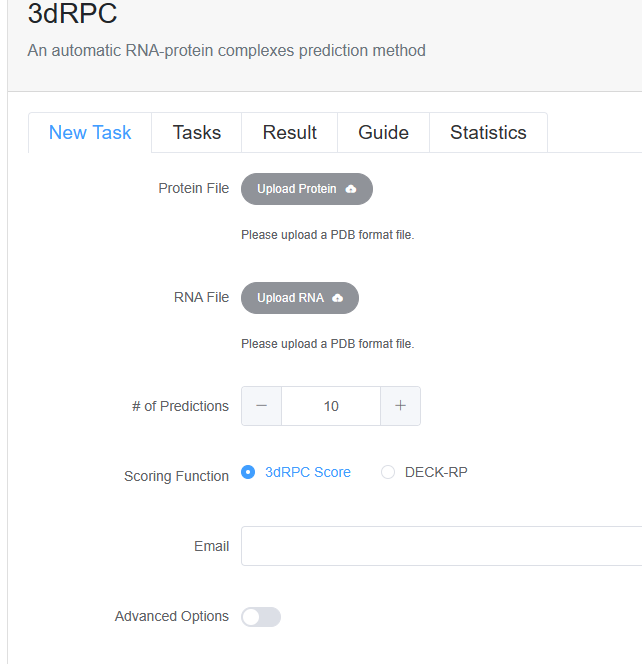

3dRPC
Click here to visit 3dRPC web server
3dRPC is an automatic program of building three-dimensional RNA-protein complex structures by docking RNA and protein structure.
The input of the 3dRPC server is the structure of protein and RNA in PDB format:
ATOM 84706 N MET V 1 -134.594 111.719 180.266
ATOM 84707 CA MET V 1 -134.339 111.991 178.856
ATOM 84708 C MET V 1 -133.342 113.135 178.673
ATOM 84709 O MET V 1 -133.677 114.186 178.125
ATOM 84710 CB MET V 1 -135.647 112.297 178.123
ATOM 84711 CG MET V 1 -135.482 112.480 176.627
ATOM 84712 SD MET V 1 -134.220 111.380 175.959
ATOM 84713 CE MET V 1 -134.680 109.827 176.724
You can upload the structures by clicking the corresponding buttons. Then, you can input the number of predictions. The 3dRPC server can generate corresponding number of complexes. Finally, submit your job by clicking the "Submit" button. Once a job is submitted to the 3dRPC server, a web page is displayed to show the rate of progress and the predicted result if the job is finished. You can download the predicted complex structures in PDB format.
